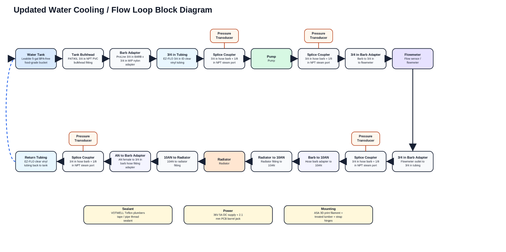
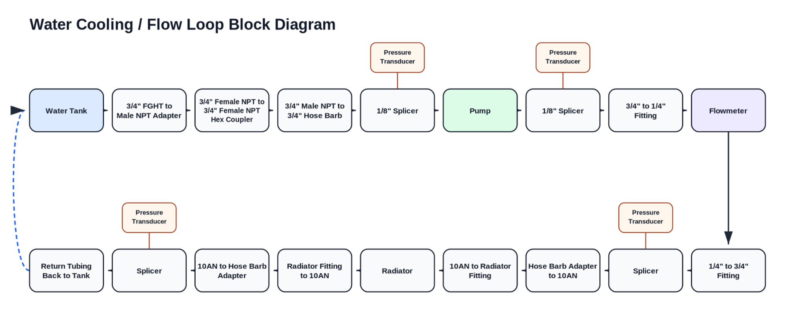

Cooling Test Bench
This project is an in-progress test bench designed to characterize unknown cooling-system values for Aztec Electric Racing. The primary goal is to measure pressure loss across the radiator at different flow rates so the radiator’s minor loss coefficient can be derived. A secondary goal is to estimate pump efficiency by comparing ideal head rise at different input voltages against measured pressure sensor outputs.

Problem
The radiator is currently an unknown value in the cooling calculations. Despite causing a notable pressure loss across the cooling loop, this loss is not currently accounted for in the system model. Without testing the radiator directly, it is difficult to accurately predict loop performance, pump behavior, or the pressure losses that the cooling system will experience at different flow rates.
Solution
The cooling test bench is designed to measure pressure loss across the radiator at different flow rates. By comparing flow rate against the pressure difference between the sensors before and after the radiator, the minor loss coefficient can be derived from the slope of the curve. The test bench will also help estimate pump efficiency by comparing ideal head rise at several input voltages to the actual head rise measured from the pressure sensors.
A key design requirement is compactness. The tubing and sensors are planned to mount onto a 2x6 wood base that can be cut into separate sections and connected with hinges. This allows the tubing and sensors to be dismounted, while the wood base can fold together for storage, which is useful given the team’s limited shop space.
Status
The project is currently in progress. The materials have been approved, but purchasing is paused until the new team president is sworn in and purchases for the next year can begin.
Step One / Brainstorm
The first stage was a rough materials brainstorm focused on identifying the major components needed to make the test bench practical, low-cost, and easy to assemble. The early concept used a 5-gallon bucket as a reservoir, barbed hose fittings for simple tube connections, clear vinyl tubing, four pressure sensors, a flow meter, splice couplers, and a compact wiring system.
- The bucket reservoir was selected because it is simple, cheap, and easy to connect to a bulkhead fitting.
- Clear vinyl tubing was selected because it is pressure-rated above the expected test range and can handle the expected temperatures.
- Pressure sensors and a flow meter were included to measure radiator loss and derive pump efficiency.
Step Two / Initial Block Diagram
The second step was creating the first block diagram and identifying materials that would make the loop functional. This version established the main system architecture: reservoir, pump, pressure sensors, radiator, flow meter, tubing, and an Arduino-based data collection setup.
- Pressure sensors are placed before and after key components to compare input and output pressure.
- The flow meter captures flow rate for each pump PWM input.
- The Arduino reads PWM inputs, sensor outputs, and flow feedback through the serial monitor.

Step Three / Cost and Loss Reduction
After reviewing the initial loop, the design was refined to reduce cost, simplify connections, and limit unnecessary pressure losses. Tube sizing was kept constant at 3/4 inch throughout the test bench to reduce losses from reducers and increasers. The layout was also revised to keep the system compact and easier to mount onto a foldable 2x6 base.
- The final block diagram emphasizes a cleaner loop layout with fewer unnecessary restrictions.
- Consistent tubing size reduces added losses from fittings and transitions.
- The final design supports radiator loss testing and pump efficiency estimation in one compact setup.
Step Four / In Progress
The next step is purchasing materials, assembling the foldable base, mounting the tubing and sensors, and beginning test runs at different pump input voltages. Once the bench is assembled, flow rate and pressure loss data will be collected to calculate radiator minor loss and estimate pump efficiency.